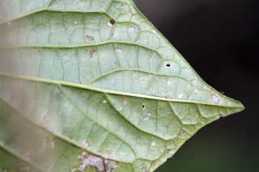
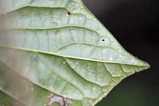
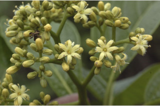
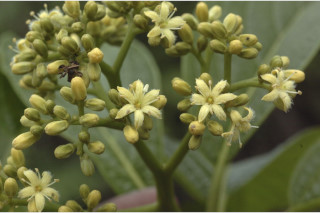
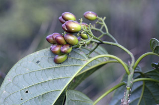
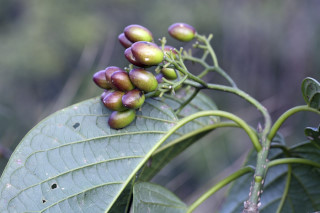

Trees up to 8 m tall.
8 ಮೀ. ಎತ್ತರದವರೆಗಿನ ಮರಗಳು.
8 മീറ്റര്വരെ ഉയരമുളള മരങ്ങള്.
மரங்கள், 8 மீ. வரை வளரக்கூடியது
Bark brownish, lenticellate; blaze light orange.
ತೊಗಟೆ ಕಂದು ಬಣ್ಣದಲ್ಲಿದ್ದು ವಾಯು ವಿನಿಮಯ ಬೆಂಡು ರಂಧ್ರಗಳ ಸಮೇತವಿರುತ್ತದೆ;ಕಚ್ಚು ಮಾಡಿದ ಜಾಗ ತೆಳು ಕಿತ್ತಳೆ ಬಣ್ಣದಲ್ಲಿರುತ್ತದೆ.
ശ്വസനനന്ധ്രങ്ങളുളള, തവിട്ട് നിറത്തിലുളള പുറംതൊലി; വെട്ട്പാടിന് ഇളം ഓറഞ്ച് നിറം.
மரத்தின் பட்டை ப்ரவுன் நிறமானது, லெண்டிசெல் உடையது; உள்பட்டை வெளிறிய ஆரஞ்சு நிறமானது.
Young branchlets subterete, lenticellate, puberulous.
ಎಳೆಯ ಕಿರುಕೊಂಬೆಗಳು ಉಪ-ದುಂಡಾಗಿದ್ದು ವಾಯು ವಿನಿಮಯ ಬೆಂಡು ರಂಧ್ರಗಳ ಸಮೇತವಿರುತ್ತದೆ ಮತ್ತು ಸೂಕ್ಷ್ಮ ಮೃದು ತುಪ್ಪಳದಿಂದ ಕೂಡಿರುತ್ತವೆ.
ശ്വസനരന്ധ്രങ്ങളുളള ലഘുരോമിലമായ, ഏതാണ്ട് ഉരുണ്ട ഇളം ഉപശാഖകള്.
சிறிய நுனிக்கிளைகள் குறுக்குவெட்டுத் தோற்றத்தில் வளையம் போன்றது, லெண்டிசெல் உடையது, நுண்ணிய உரோமங்களுடையது.
Leaves simple, alternate, spiral, clustered at twig ends; petiole 1.2-6 cm long, flat above, puberulous; lamina 9-30 x 5-14 cm, broadly ovate-oblong to elliptic-oblong and sometimes obovate, apex acuminate, base acute to rounded attenuate or asymmetric, margin entire, chartaceous (at low elevations) to coriaceous with strong nerves (at high elevations), dark green above, pale beneath, glabrous; midrib flat; secondary_nerves 6-11 pairs; tertiary_nerves, distantly percurrent.
ಎಲೆಗಳು ಸರಳವಾಗಿದ್ದು ಪರ್ಯಾಯ ಮತ್ತು ಸುತ್ತು ಜೋಡನಾ ಮಾದರಿಯಲ್ಲಿರುತ್ತವೆ ಮತ್ತು ಕುಡಿಕೊಂಬೆಗಳ ತುದಿಯಲ್ಲಿ ಗುಂಪಾಗಿರುತ್ತವೆ;ತೊಟ್ಟುಗಳು 1.2 - 6 ಸೆಂ.ಮೀ. ವರೆಗಿನ ಉದ್ದವಿದ್ದು ಮೇಲ್ಭಾಗದಲ್ಲಿ ಚಪ್ಪಟೆಯಾಗಿರುತ್ತದೆ ಹಾಗೂ ಸೂಕ್ಷ್ಮ ಮೃದು ತುಪ್ಪಳದಿಂದ ಕೂಡಿರುತ್ತವೆ;ಪತ್ರಗಳು 9-30X5-14ಸೆಂ.ಮೀ.ಗಾತ್ರ ಹೊಂದಿದ್ದು ವಿಶಾಲ ಅಂಡಾಕಾರ-ಚತುರಸ್ರದಿಂದ ಅಂಡವೃತ್ತ- ಚತುರಸ್ರದವರೆಗಿನಆಕಾರದಲ್ಲಿರುತ್ತವೆ,ಕೆಲವು ವೇಳೆ ಬುಗುರಿಯ ಆಕಾರದಲ್ಲಿರುತ್ತವೆ. ತುದಿ ಕ್ರಮೇಣ ಚೂಪಾಗುವ ರೀತಿಯಲ್ಲಿದ್ದು, ಚೂಪಾದುದರಿಂದ ದುಂಡಾದ ತಳಬಾಗಿದ ಅಥವಾ ಅಸಮವಾದ ಬುಡ ಮತ್ತು ನಯವಾದ ಅಂಚನ್ನು ಹೊಂದಿರುತ್ತವೆ; ಮೇಲ್ಮೈ ಕಾಗದವನ್ನೋಲುವುದರಿಂದ (ಕಡಿಮೆ ಎತ್ತರದ ಪ್ರದೇಶಗಳಲ್ಲಿ) ದೃಢವಾದ ನಾಳಗಳನ್ನುಳ್ಳ ತೊಗಲನ್ನೋಲುವ (ಎತ್ತರದ ಪ್ರದೇಶಗಳಲ್ಲಿ)ಮಾದರಿಯಲ್ಲಿರುತ್ತದೆ;ಪತ್ರಗಳು ಮೇಲ್ಭಾಗದಲ್ಲಿ ಕಡು ಹಸಿರು ಬಣ್ಣ ಹೊಂದಿರುತ್ತವೆ ಮತ್ತು ತಳ ಭಾಗದಲ್ಲಿ ತೆಳು ಹಸಿರು ಬಣ್ಣ ಹೊಂದಿರುತ್ತವೆ ಹಾಗೂ ರೋಮರಹಿತವಾಗಿರುತ್ತವೆ;ಮಧ್ಯನಾಳ ಚಪ್ಪಟೆಯಾಗಿರುತ್ತದೆ;ಎರಡನೇ ದರ್ಜೆಯ ನಾಳಗಳು 6 - 11 ಜೋಡಿಗಳಿರುತ್ತವೆ;ಮೂರನೇ ದರ್ಜೆಯ ನಾಳಗಳು ಹೆಚ್ಚಿನ ಅಂತರ ಹೊಂದಿದ್ದು ಎಲೆದಿಂಡಿಗೆ ಅಡ್ಡವಾಗಿ ಕೂಡುವಂತವು.
ലഘുവായ ഇലകള്, ഏകാന്തരക്രമത്തില്, സര്പ്പിളമായി, തണ്ടിന്റെ അറ്റത്ത് കൂട്ടമായി അടുക്കിയ വിധത്തിലാണ്; ലഘുരോമിലമായ, മുകളില് പരന്നിരിക്കുന്ന ഇലഞെട്ടിന് 1.2 സെ.മീ മുതല് 6 സെ.മീ വരെ നീളം; പത്രഫലകത്തിന് 9 സെ.മീ മുതല് 30 സെ.മീ വരെ നീളവും 5 സെ.മീ മുതല് 14 സെ.മീ വരെ വീതിയും, വീതിയേറിയ അണ്ഡാകാര ആയതാകാരം തൊട്ട് ദീര്ഘവൃത്തീയ ആയതാകാരമോ ചിലപ്പോള് അപഅണ്ഡാകാരമോ ആണ്, പത്രാഗ്രം ദീര്ഘമാണ്, പത്രാധാരം നിശിതം തൊട്ട് വൃത്താകാരമോ, സാവധാനം നേര്ത്തവസാനിക്കുന്നതോ ആസമമോ ആവാം, അരികുകള് അവിഭജിതം, കടലാസ്പോലത്തെ പ്രകൃതം (താഴ്ന്ന ഉയരമുളളയിടങ്ങില്) തൊട്ട് ദൃഢമായ ഞരമ്പുകളുളള ചര്മ്മില പ്രകൃതം വരെയാകാം (ഉയര്ന്ന ഉയരമുളളയിടങ്ങളില്), മുകളില് കടുംപച്ച നിറമാണ്, കീഴെ ഇളം നിറവും, അരോമിലമാണ്; മുഖ്യസിര പരന്നതാണ്; 6 മുതല് 11 വരെ ജോഡി ദ്വിതീയ ഞരമ്പുകള്; വിദൂര പെര്കറന്റ് രീതിയിലുളള ത്രിതീയ ഞരമ്പുകള്.
இலைகள் தனித்தவை, மாற்றுஅடுக்கமானவை, சுழல் போன்று அமைந்தவை, சிறுகிளைகளின் நுனியில் இலைகள் கூட்டமாக மற்றும் நெருக்கமாக காணப்படும்; இலைக்காம்பு 1.2-6 செ.மீ. நீளமானது, குறுக்குவெட்டுத் தோற்றத்தில் பிளேனோகான்வக்ஸ், நுண்ணிய உரோமங்களுடையது; இலை அலகு 9-30 X 5-14 செ.மீ., அகன்ற முட்டை-நீள்சதுர வடிவானது முதல் நீள்வட்டம்-நீள்சதுர வடிவானது, அலகின் நுனி அதிக்கூரியது, அலகின் தளம் கூரியது முதல் வட்டம் போன்றது, அட்டனுவேட் அல்லது சமமற்றது, அலகின் விளிம்பு முழுமையானது, சார்ட்டேசியஸ் (உயரம் குறைவான மலைகளில்) முதல் கோரியேசியஸ் மற்றும் தடித்த நரம்புகளுடையவை (மிக உயரமான மலைகளில் காணப்படுபவை), அலகின் மேற்புறம் கரும்பச்சை நிறமானது, கீழ்புறத்தில் வெளிறிய பச்சை நிறமானது, உரோமங்களற்றது; மையநரம்பு மேற்புறத்தில் அலகின் பரப்பிற்கு சமமானது; இரண்டாம் நிலை நரம்புகள் 6-11 ஜோடிகள்; மூன்றாம் நிலை நரம்புகள் அகன்ற பெர்க்கரண்ட்.
Flowers yellowish, in terminal cymes, emitting an unpleasant odour.
ಹೂಗಳು ಹಳದಿ ಬಣ್ಣ ಹೊದಿರುತ್ತವೆ ಮತ್ತು ತುದಿಯಲ್ಲಿನ ಮಧ್ಯಾರಂಭಿ ಪುಷ್ಪಮಂಜರಿಯಲ್ಲಿರುತ್ತವೆ ಹಾಗೂ ಅಹಿತಕರವಾದ ವಾಸನೆಯನ್ನು ಹೊಂದಿರುತ್ತವೆ.
അസുഖകരമായ ഗന്ധമുളള, മഞ്ഞപ്പൂക്കള് ഉച്ഛസ്ഥ സൈമുകളായി ഉണ്ടാകുന്നു.
மலர்கள் மஞ்சள் நிறமானவை, தண்டின் நுனியில் காணப்படும் சைம் வகை மஞ்சரி, துர்நாற்றமுடையது.
Drupe, purplish red, smooth, oblong, 1.5-1.8 cm; seed 1.
ಡ್ರೂಪ್ಗಳು ಕೆನ್ನೀಲಿ ಮಿಶ್ರಿತ ಕೆಂಪು ಬಣ್ಣದಲ್ಲಿದ್ದು ನಯವಾಗಿರುತ್ತವೆ ಮತ್ತು ಚತುರಸ್ರಾಕಾರದಲ್ಲಿದ್ದು 1.5 ರಿಂದ 1.8 ಸೆಂ. ಮೀ. ಉದ್ದ ಹೊಂದಿರುತ್ತವೆ;ಬೀಜ 1.
ഒറ്റവിത്തുളള കായ, 1.5 സെ.മീ തൊട്ട് 1.8 സെ.മീ വരെ നീളമുളള ആയതാകാരവും മിനുസമുളള, ഊതചുവപ്പ് നിറത്തിലുളള ഡ്രൂപ്പ് ആണ്.
உள்ளோட்டுத்தசைகனி (ட்ரூப்), பர்புள் கலந்த சிவப்பு, வழுவழுப்பானது, நீள்சதுர வடிவானது, 1.5-1.8 செ.மீ.; விதை ஒன்றுடையது.


 

 



 
